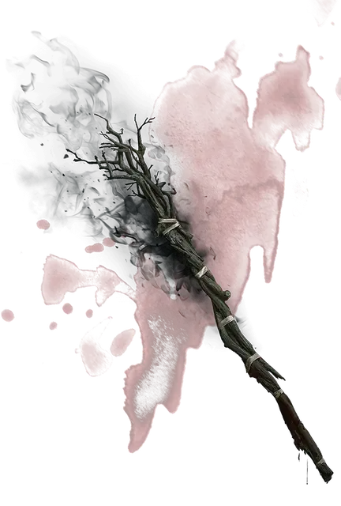

Посох Галтиас
Gulthias Staff
Посох, редкий (требуется настройка)

Рекомендованная стоимость 501-5 000 зм
Созданный из ветви древа Галтиас (см. раздел «Заразы» в «Бестиарии»), посох Галтиас – это пористый отрез чёрного дерева. Его зло заставляет зверей явно чувствовать себя некомфортно в пределах 30 футов от него. Посох имеет 10 зарядов и восполняет 1к6+4 потраченных зарядов на закате каждого дня.
Если посох будет сломан или сожжён до пепла, древесина испускает ужасающий, нечеловеческий крик, который слышно на 300 футов. Все заразы [blights], которые услышат этот крик, немедленно чахнут и погибают.
Удар вампира. Посох может быть использован как волшебный боевой посох. При попадании он наносит урон как обычный посох, а вы можете потратить 1 заряд, чтобы восполнить количество хитов, равное урону, нанесённому этим оружием. Каждый раз, когда тратится заряд, посох истекает кроваво-красной слизью и вы должны преуспеть в спасброске Мудрости Сл 12 или стать подверженным кратковременному безумию (см. «Безумие» в главе 8 «Руководства Мастера»).
Гибель для зараз. Пока вы настроены на посох, заразы [blights] и другие злые существа с типом «растение» не воспринимают вас враждебно, пока вы не причиняете им вреда.